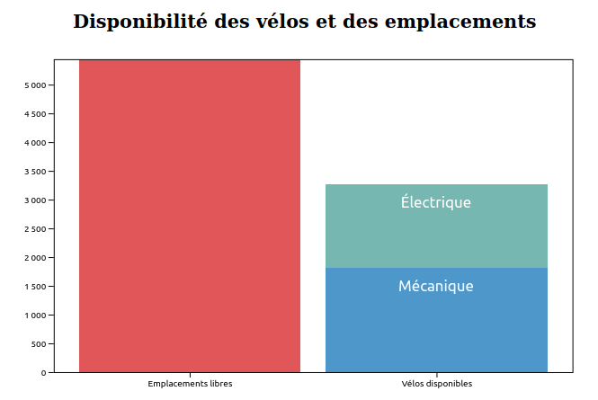
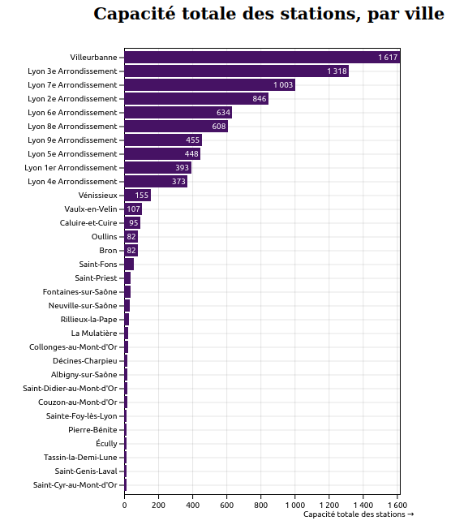
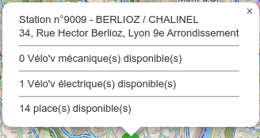
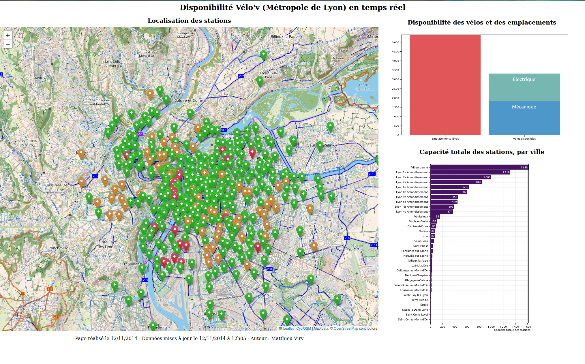
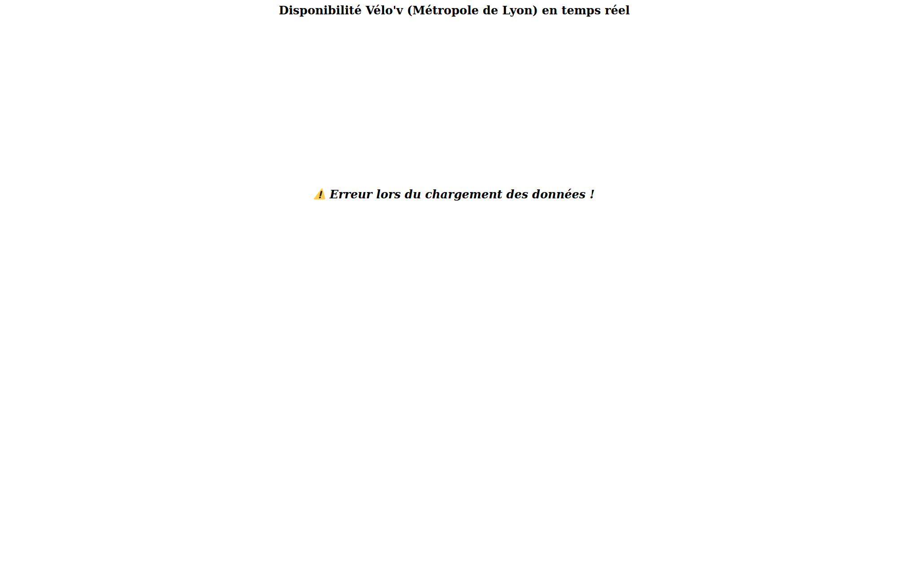

Évaluation - Programmation Web pour la visualisation
BUT Science des données - 3ème année - Université Grenoble Alpes
Modalités
Il s’agit d’un travail individuel d’une durée de 2h00 (2h40 pour les étudiant.e.s concerné.e.s par un tiers-temps), à réaliser sur les machines de la salle informatique (pas d’utilisation d’ordinateur personnel). Vous devez rendre votre travail sur l’espace dédié au cours “BUT3 SD R5.VCOD.07 : Programmation web pour la visualisation” sur Chamilo dans la rubrique “Travaux” (votre rendu doit être un fichier ZIP contenant l’ensemble des fichiers nécessaires à l’affichage de votre page : document HTML, code JavaScript, etc.).
Vous avez le droit d’utiliser tous les documents que vous souhaitez (cours, notes, etc.) ainsi que de faire des recherches sur le Web.
Les outils permettant de communiquer, ou de partager des documents, entre vous ou avec des tiers (mail, chat, signal, telegram, dropbox, etc.) ainsi que les IA génératives (ChatGPT, Gemini, etc.) ne sont pas autorisés.
Consignes
Vous devez construire une page HTML présentant l’état actuel de la disponibilité des vélos en libre-service du service Vélo’v de la Métropole de Lyon (disponible à Lyon et dans une vingtaine de communes de la Métropole).
Cette page doit contenir les éléments suivants :
un titre
un pied de page avec la date de réalisation de la page, la date de mise à jour des données et le nom de l’auteur.trice (la date de réalisation de la page est donc écrite “en dure” alors que la date de mise à jour des données est générée avec du code JavaScript),
une carte Leaflet (avec le fond de carte de votre choix) affichant les différentes stations présentes dans le jeu de données ; le marqueur doit être d’une couleur différente selon le taux de remplissage de la station (la couleur associée au taux de remplissage est indiqué dans la variable
availabilitydu jeu de données : ‘Vert’, ‘Orange’ ou ‘Rouge’).un 1er graphique, réalisé avec Plot permettant de visualiser la répartition (à l’échelle de l’ensemble du réseau) entre places libres, vélos électriques disponibles et vélos mécaniques disponibles - vous devez ajouter les textes “électrique” et “mécanique” pour distinguer le type de vélo, comme dans l’exemple fourni (voir Figure 1 ci-dessous),
un 2nd graphique réalisé avec Plot, permettant de visualiser la capacité totale cumulée par ville / arrondissement, sous forme d’un diagramme à barres, comme dans l’exemple fourni (voir Figure 2 ci-dessous).
Lors d’un clic sur un marqueur de la carte, un popup doit s’ouvrir et afficher les informations suivantes :
numéro de la station et nom de la station, adresse, nombre de vélos électriques disponibles, nombre de vélos mécaniques disponibles, nombre de docks vides (cf. Figure 3 ci-dessous).
Puisqu’il s’agit d’un jeu de données en temps réel, et parce que la carte ainsi que le premier graphique représentent des informations qui varient fortement au cours de la journée, il est nécessaire de mettre à jour les données, et donc les graphiques et la carte, à intervalles réguliers (par exemple toutes les 5 minutes).
Optons pour la solution la plus simple : un rechargement total de la page. Vous devez écrire le code JavaScript permettant de recharger la page automatiquement toutes les 5 minutes.



Pour rappel, votre page HTML doit importer les éléments suivants :
- le fichier CSS de leaflet :
<link rel="stylesheet" href="https://unpkg.com/leaflet@1.9.4/dist/leaflet.css"
integrity="sha256-p4NxAoJBhIIN+hmNHrzRCf9tD/miZyoHS5obTRR9BMY="
crossorigin=""/>- le fichier JS de leaflet :
<script src="https://unpkg.com/leaflet@1.9.4/dist/leaflet.js"
integrity="sha256-20nQCchB9co0qIjJZRGuk2/Z9VM+kNiyxNV1lvTlZBo="
crossorigin=""></script>- le fichier JS de D3.js :
<script src="https://cdn.jsdelivr.net/npm/d3@7"></script>- le fichier JS de Plot :
<script src="https://cdn.jsdelivr.net/npm/@observablehq/plot@0.6"></script>- par ailleurs, vous aurez besoin d’inclure le fichier JS qui contiendra votre code JavaScript (que vous pouvez nommer comme vous le souhaitez) :
<script src="index.js"></script>Jeu de données
Pour récupérer les données, vous devez utiliser l’URL suivante : https://data.grandlyon.com/fr/datapusher/ws/rdata/jcd_jcdecaux.jcdvelov/all.json?maxfeatures=-1.
La description du jeu de données peut être trouvée ici mais la description qui est donnée ci-dessous doit vous permettre de réaliser l’ensemble des tâches demandées.
L’objet que vous récupérez est un objet JSON contenant 6 propriétés : fields, layer_name, nb_results, table_alias, table_href et values. Les entrées qui correspondent à chaque station sont dans le tableau correspondant à la propriété values (qui contient environ 410 entrées).
Pour chaque entrée du tableau values, vous trouverez notamment :
- une propriété
latet une propriétélngqui contiennent les coordonnées de la station, - une propriété
availabilityqui contient le code couleur de disponibilité de la station (vert, orange ou rouge), - une propriété
available_bike_standsqui contient le nombre de docks vides, - une propriété
available_bikesqui contient le nombre de vélos disponibles, - une propriété
main_standsqui contient une propriétéavailabilitiesqui contient le nombre de vélos électriques (electricalBikes) et mécaniques (mechanicalBikes) disponibles.
Ainsi, normalement, pour chaque station, vous devriez pouvoir calculer la capacité totale de la station (nécessaire pour le 2nd graphique) avec la formule suivante : available_bike_stands + available_bikes.
Autres éléments à prendre en compte
- Lors de l’ouverture de la page, la carte doit être centrée et zoomée pour afficher l’ensemble des entrées du jeu de données.
- Vous devez choisir les couleurs des graphiques pour ne pas utiliser les valeurs par défaut de Plot.
- Vous chercherez à agencer votre page de manière à faire tenir l’ensemble des éléments dans la page (sans scroll vertical ni horizontal - cf. Figure 4).

Question bonus
Vous devez gérer le cas où le chargement des données échoue (par exemple si le serveur est indisponible, si l’utilisateur n’est pas connecté à Internet, etc.).
Si le chargement échoue, la page doit afficher un message d’erreur (cf. Figure 5 ci-dessous).

Barème indicatif :
Récupération des données : 1 point
Titre : 0.5 point
Pied de page : 1.5 points
Structure du document HTML et mise en page : 2.5 points
Carte, markers et popups : 5 points
Graphique 1 : 4 points
Graphique 2 : 4 points
Rechargement automatique de la page : 1.5 points
Question bonus : 1 point